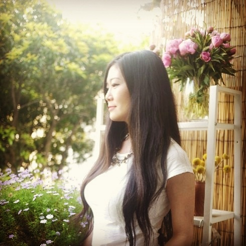
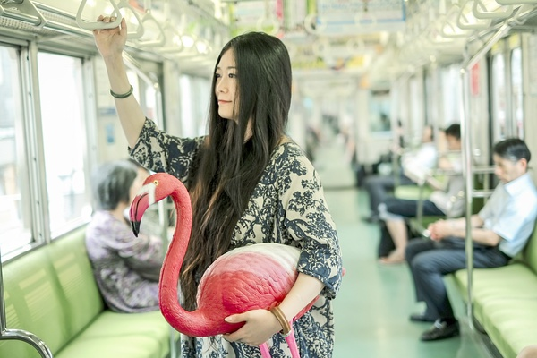
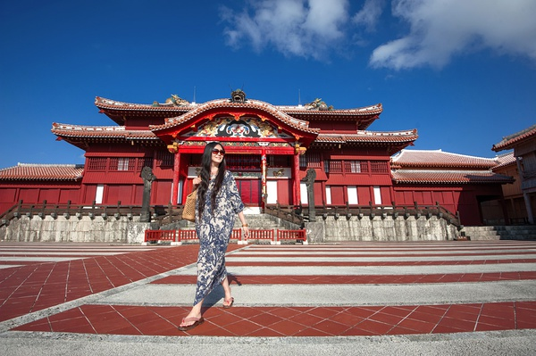
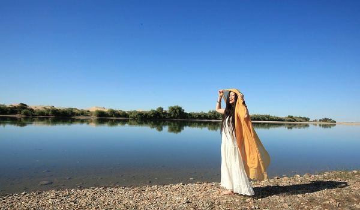

正文: 【多图】英伦风和学院风迄今没找到合适的解决方式，但是小清新我觉得我可以来说一下。
我本人不高，不瘦，胸嘛，国内基本上是没我的型号的内衣的。
基本上穿衬衫什么的会爆扣，穿体恤图案会扭曲，腰是有的，但是除非穿紧身的基本上都看不见。
曾经为了参加活动被室友带着在某独立品牌店从一楼试到三楼，不露胸的像孕妇，露胸的像中年，紧身的像特种工作者……森森地感受到了这个世界对大胸女子的恶意……
所以很长一段时间以来，都是简约风的紧身白T黑T之类的。

后来因为工作需要拍照，个人又很喜欢日系的感觉，所以也算是研究出来一点点办法……
第一招，留长发。
除了长发本身就是小清新利器之外，你会发现长发有很多好处。
胸很大？没事，长发一挡啥都看不见！手臂肉肉的？没事，长发放下来简直是修手臂利器美图秀秀都不用了好么！
当然也经常有人问我怎么才能留那么长的头发，其实就一个字，“懒”。
回国之后一直没找到自己喜欢的美发师所以一气之下便5年没进过理发店，
不长这么长都奇怪了……
日常其实也就是自己洗洗，擦半干，不吹，所以也不算费事……（我连护发素都不用……）
当然，如果懒得留那么长的头发，可以用各种各样的围巾来掩饰。
第二招，穿长裙长衫。
以前觉得自己矮加胸大，是不是穿了长裙就是个行走的麻袋，一直很抵触。
但是真正尝试之后惊呆了！效果很好！
到脚长裙不会把人分割成几段，意外地特别显高！
尤其是纯色的长裙，简直是增高利器。（当然选择拍照角度也很重要）
至于胸……老老实实穿V领吧，有事业线和小清新其实不矛盾。
第三招，不穿内衣。加含胸。
只能不穿了……
现在想到的大概是这些……回头想到什么再补充。